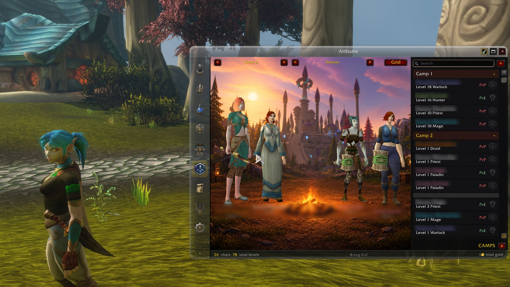
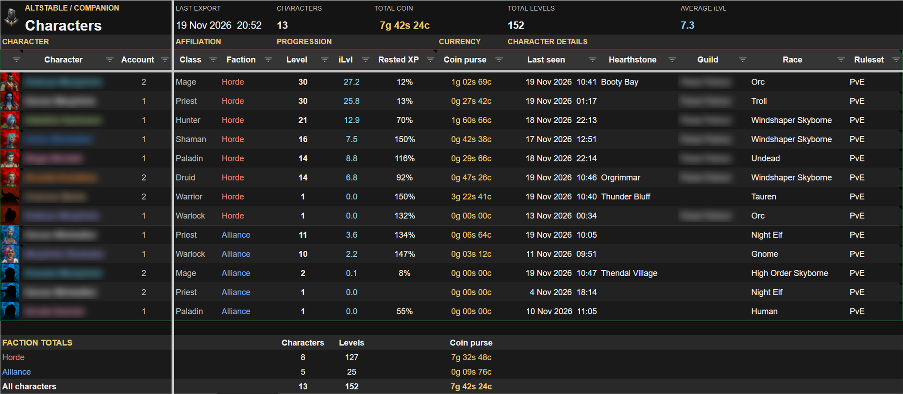

AltStable Companion
A free, open-source Windows app for players of the AltStable addon for World of Warcraft: Forever.
Download Read the guide
What it does
Roster portraits
Turns the portraits you capture in the game with /alts portrait into the cutouts AltStable's Roster draws your characters with.
Portraits from the armory
Optional: takes each character's picture from Blizzard's armory, with no capture needed.
Enhanced portraits
Optional, off by default: asks the Codex CLI on your PC, with your own ChatGPT account, for a nicer picture of each portrait.
Google Sheet
Optional, off until you connect: your characters in a spreadsheet in your own Google Drive.
Your characters in a Google Sheet
Connect your Google account in the app's settings, and it writes one spreadsheet, named AltStable, in your own Google Drive: your characters, their skills, reputations and gear, in four tabs you can filter and sort. It updates it again on its own some minutes after the game closes, or whenever you press Export now.

What it does with your Google account
- It asks for one permission, Google's
drive.file: the files the app creates itself. It cannot see, read or change any other file in your Drive. - It uses that access only to create, find again and write your AltStable spreadsheet. Your Google data goes to nobody else: there is no server of ours, and the developer receives nothing.
- Your sign-in stays on your PC, encrypted for your Windows user. Disconnect deletes it and asks Google to cancel it.
The privacy policy says exactly what the app reads, keeps and sends, for every feature.
Get it
Download AltStableCompanion-<version>-win-x64.exe from the
releases page and run it:
it is the whole app, with nothing to install, and it lives in the tray. It needs Windows 10
or 11 (64-bit) and the AltStable addon.
The guide covers the rest.
Questions or problems: open an issue.